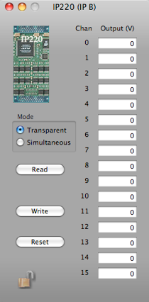

IP220 DAC



Each output channel has its own 12-bit D/A converter (DAC). Individual DACs are faster, and they eliminate glitches typically caused by the re-acquisition process of sample and holds found on multiplexed output boards.
Individual channels also have double-buffered data latches. You can select to update each output when it is written to, or to update all outputs simultaneously. Simultaneous outputs better simulate linear movements in motion processes. See the manual for more details.
Sets all outputs to zero

Read the DAC registers and load the values into this dialog
The simultaneous latches all DACs at the same time. In transparent mode the values are latched one at a time.
Voltage for each of 16 channels
The range of the outputs is from -10V to +10V.